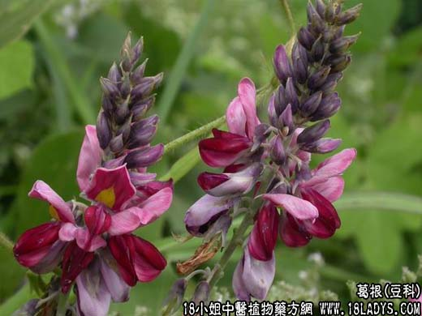

【中药概述】
葛根为豆科藤本植物野葛或甘葛的根。甘、辛，凉。归脾、胃经。
1．发表解肌：用于外感发热、无汗、头痛、项背强痛，有解肌退热作用，如（<伤寒六书>柴葛解肌汤）、（<伤寒论>葛根汤）。
2．透疹：用于麻疹初期，透发不畅，如（升麻葛根汤）。
3．升阳止泻：用于脾虚实泄泻及热泻、热痢兼有表证者，能升发清阳，鼓舞脾胃阳气上升，而有止泻作用，如（七味白术散）、（<伤寒论>葛根芩连汤）。
4．生津止渴：用于热病口渴或消渴，有解热生津之效，如（玉泉丸）。
【药效鉴别】
葛根善于发散外邪而解除肌表之热，又具升阳作用，能鼓舞脾胃清阳之气上行，以生津止渴。
【药理作用】
1.葛根黄酮成分对冠心病、动脉硬化有较好的改善作用，可降低血压，增加脑血流量、增加冠脉血流量，对心肌有保护作用；
2.有雌性激素样作用。
【化学成分】
含大豆素、大豆甙、葛根素、葛根醇、葛根藤素及异黄酮甙和淀粉。
【用量用法】
10——20g，水煎服。
【附】
葛花（为豆科藤本植物甘葛的花）。甘，平。归胃经。解酒毒，和胃止渴：用于饮过度，口渴，胃气受伤等症，如（<兰室秘藏>葛花解醒汤：葛花，人参，白蔻仁，橘皮，青皮，木香，猪苓，茯苓，神曲，泽泻，干姜，白术，砂仁）。10～20g，水煎服，或泡水代茶饮。